This was one of my first chances to push beyond a single finished model and explore variants, moving parts, and presentation. It turned the Colt Walker into a playground for customization ideas and gave me a better feel for how much personality can live inside one base platform.

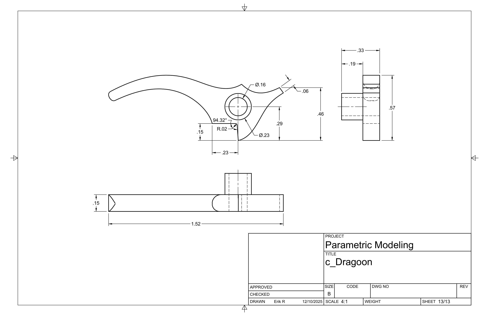
Animation
The project also became my first real experiment with Fusion 360 animation tools. Using an early version of the model, I built a breakdown that let the parts feel modular and mechanically legible.
That animation pass mattered because it made the model feel less like a static object and more like a system. Pulling the revolver apart piece by piece was a good way to learn both the software and the design.
Iterations
The sequence in The Good, the Bad, and the Ugly where a gun is assembled from separate components always stuck with me. I liked the idea of one base object spawning multiple personalities through swapped parts and silhouette changes.
- A stripped-back frame with no full barrel assembly, almost a mechanical skeleton.
- A more elegant engraved setup with a rounded body and tapered barrel.
- A cartridge conversion version inspired in part by the Gasser M1870.
Working from homemade plans found online made it messy in a good way. It was the kind of project that teaches because it refuses to be too straightforward.
More than anything, this one taught me that iteration is where a lot of the fun lives. Once the base model existed, it stopped being about reproducing a single revolver and started being about seeing how many different identities could branch out from the same core.
Drawing set
One of the most satisfying parts of this project is seeing the drawing packet as part of the work instead of hiding it behind a single glamour render. The sheets show the project as a system: variants, proportions, assemblies, and small mechanical decisions all lined up together.
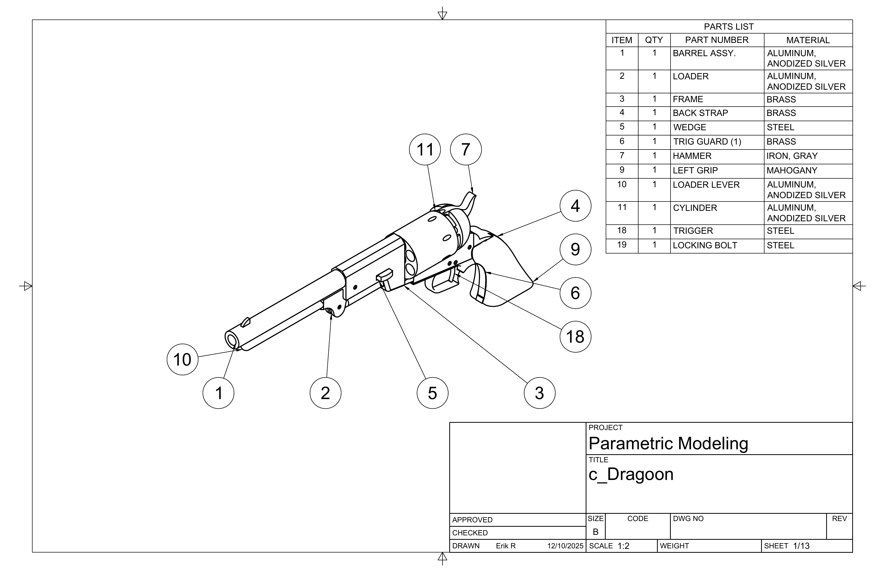
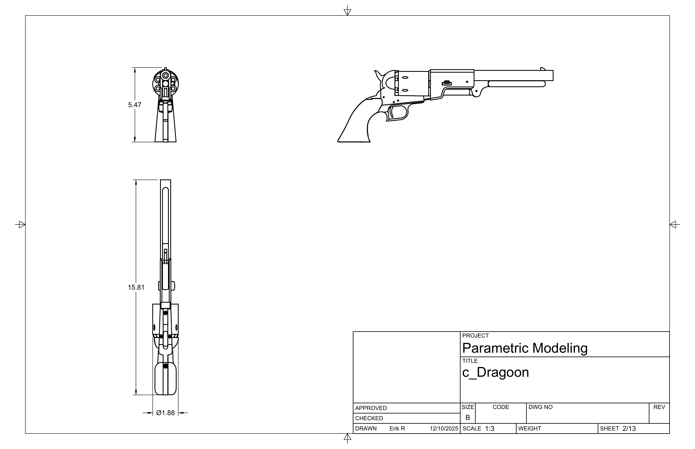
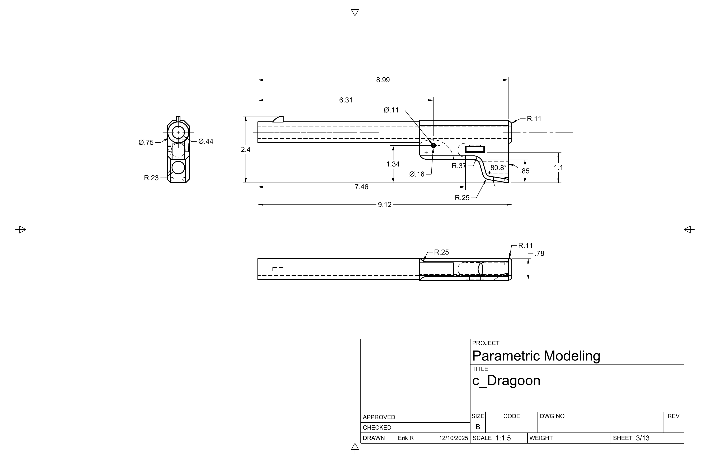
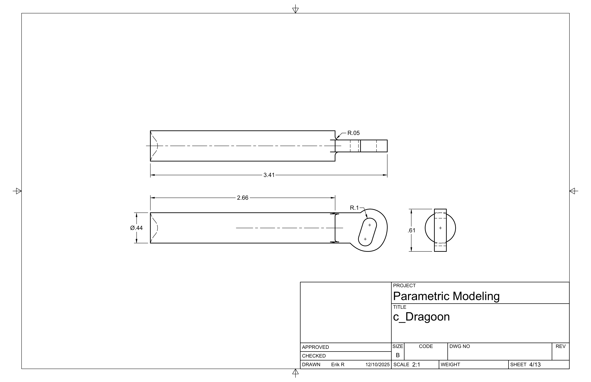
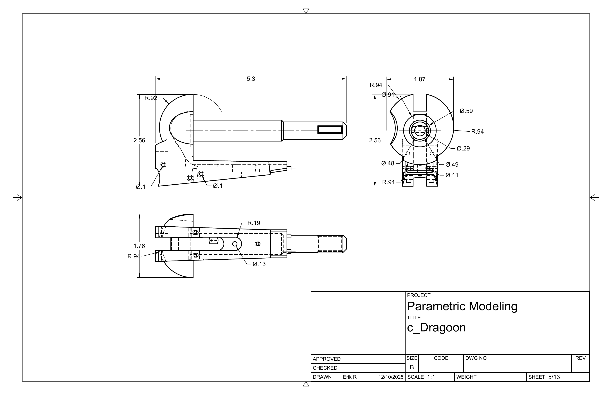
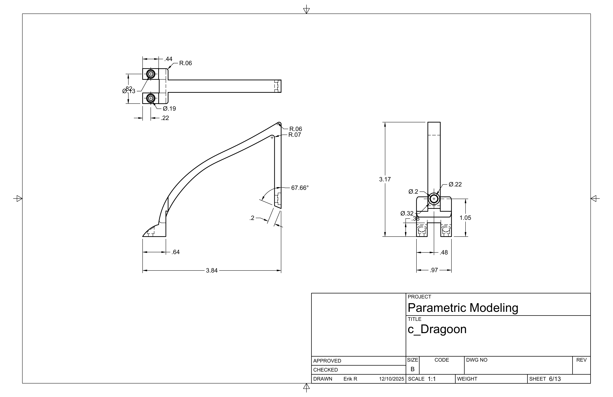
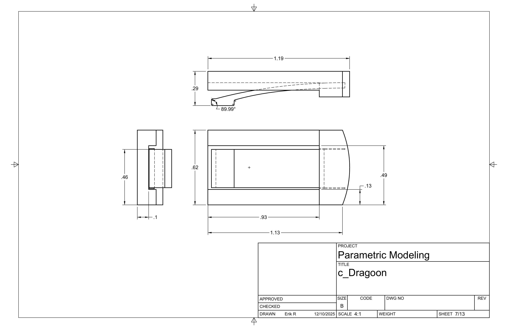
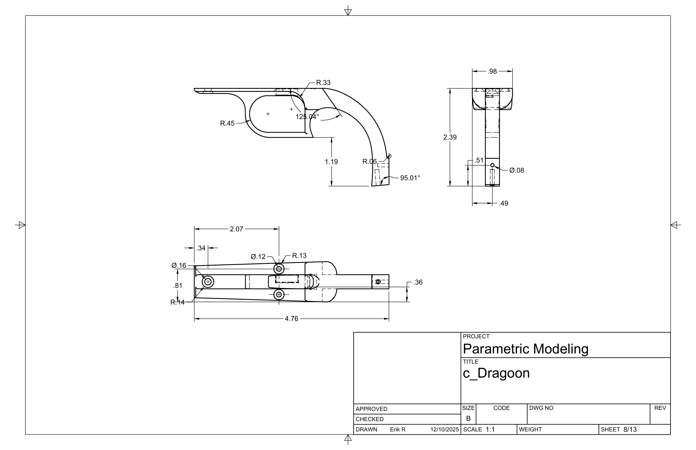
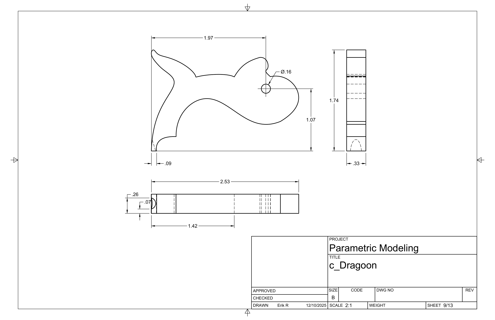
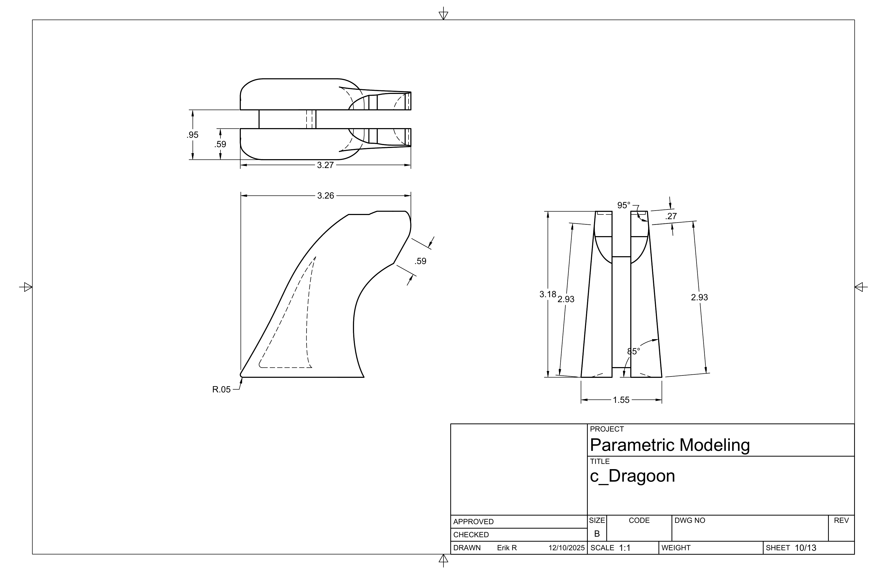
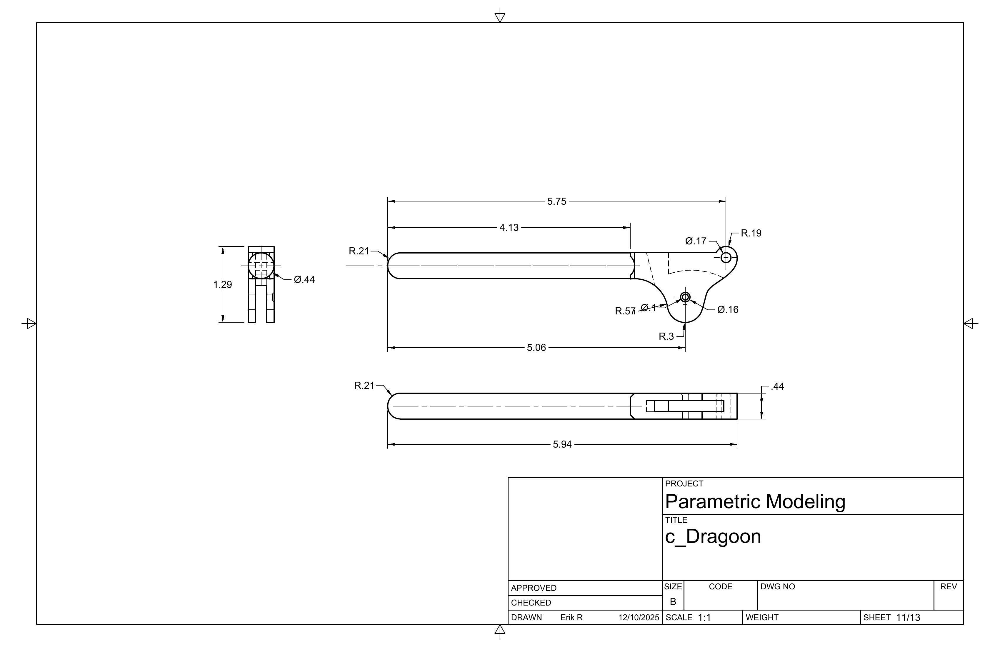
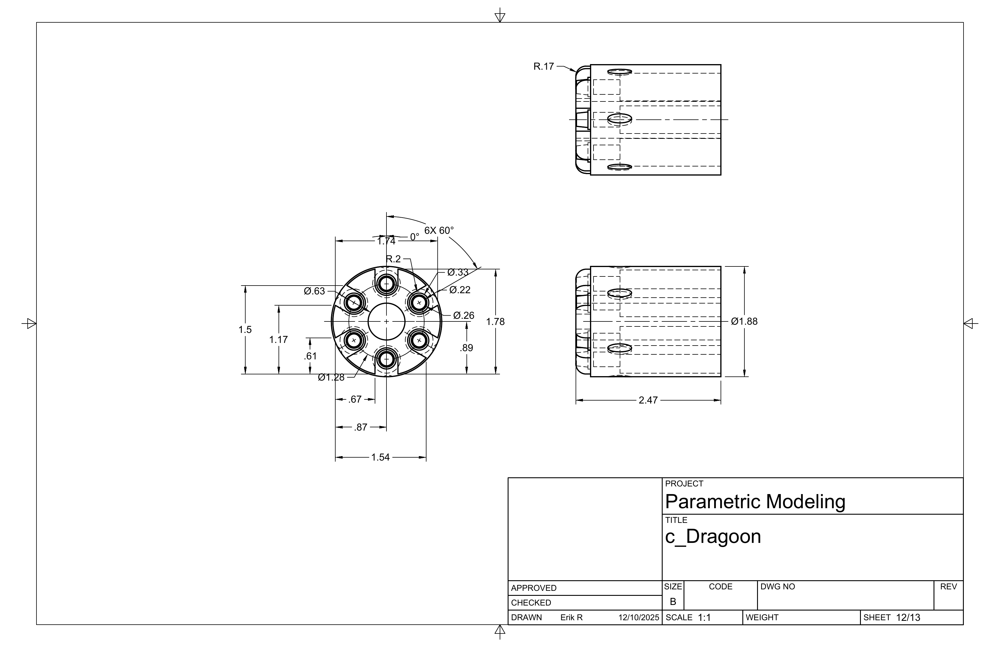